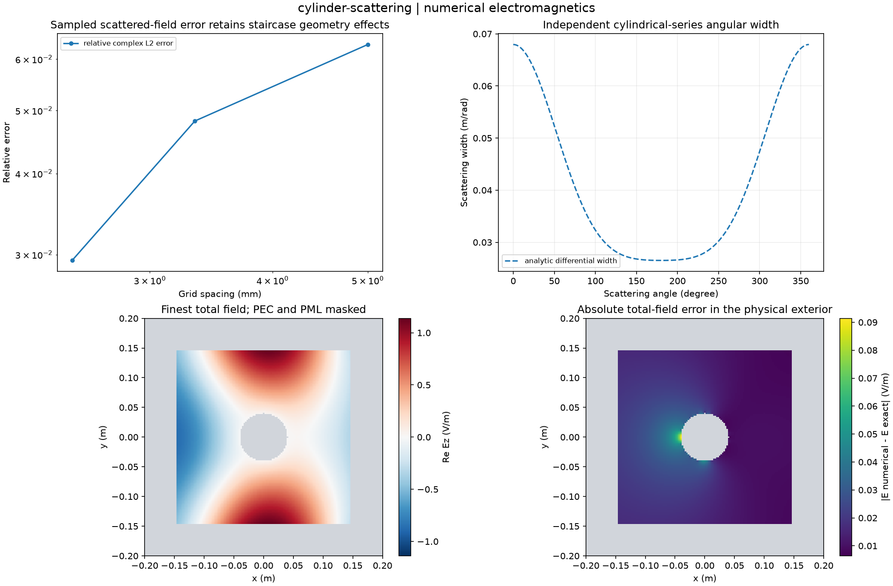

Reproducible numerical electromagnetics. Units and field components are printed on the scientific axes. Peak phasors use exp(+i omega t); outgoing waves use exp(-i k r).
Sealed numeric archive | Summary CSV | Physical parameters | Run request | Source and environment

| analytic_optical_theorem_defect_m | 0.0 |
|---|---|
| analytic_scattering_width_m | 0.2584751172663945 |
| finest_complex_relative_l2 | 0.02938546748985499 |
| maximum_solver_residual | 3.949248077162516e-15 |
These are simulations, not hardware measurements. Mesh, boundary, truncation and statistical uncertainty require distinct convergence checks. Singular or unilluminated data use explicit masks.
Source revision: 255b9ec965941d1fc97a04b9f7e2101e959fbeca.
Dirty checkout: False.
Configuration SHA-256: b146309bb75447627acd0cdf111e0a0ac2623ad0f6e500778d63516de04bb40b.
Replay preserves original source and parameter provenance. SHA-256 manifests detect changed bytes; they are unsigned integrity records, not certificates of physical validity.